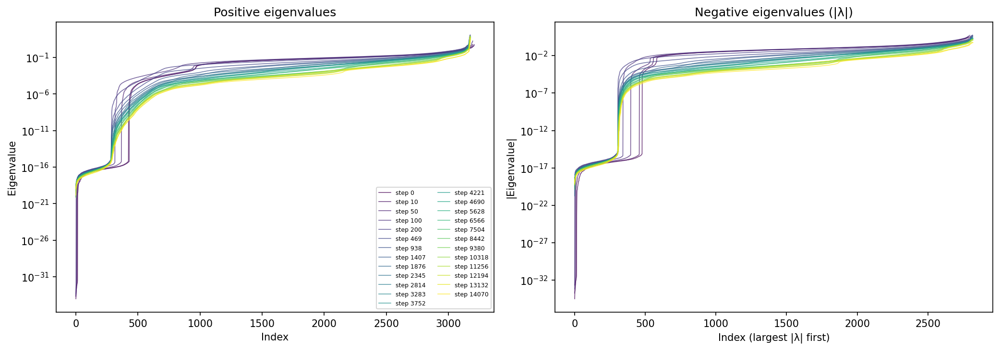
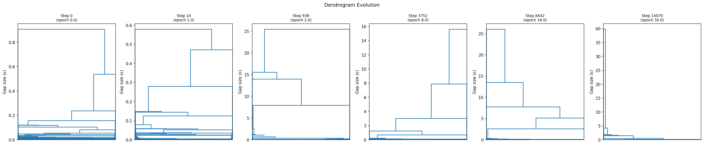
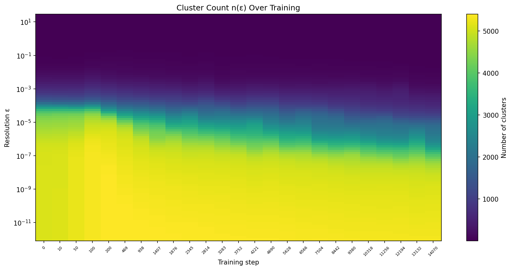
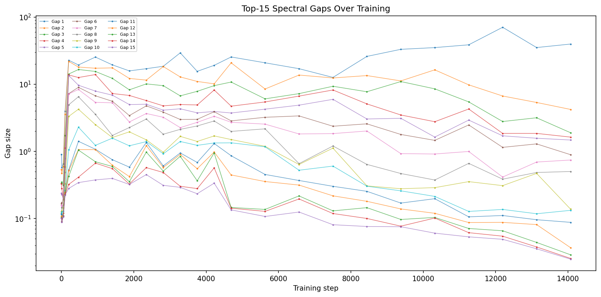
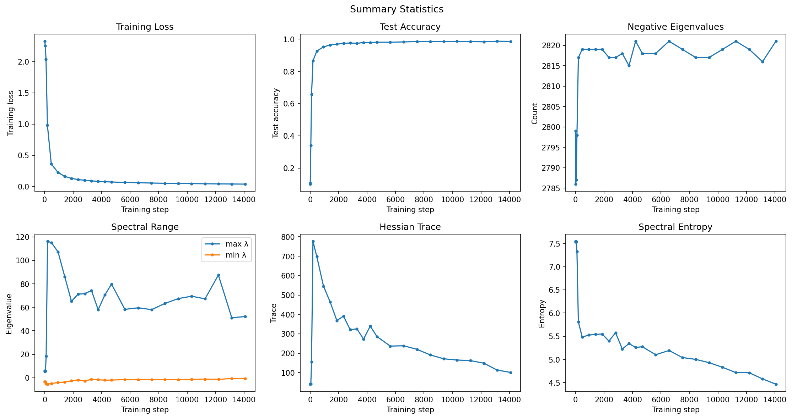

Tracking circuit formation in neural networks through Hessian eigenspectrum analysis
1. Motivation: Circuits and Curvature
Neural networks learn by developing internal computational circuits —
groups of weights that work together to implement a specific function
(edge detection, frequency filtering, modular arithmetic, etc.). A
central question in mechanistic interpretability is: when and how do
these circuits form during training?
The Hessian matrix of the loss function — the matrix of all
second derivatives with respect to parameters — captures the local
curvature structure of the loss landscape. Each eigenvalue of the
Hessian corresponds to a direction in parameter space with a specific
curvature: large eigenvalues indicate directions the loss is very
sensitive to, near-zero eigenvalues indicate flat directions the model
can wander along freely, and negative eigenvalues indicate directions
where the model sits at a saddle point.
The core hypothesis we're testing:
Spectral circuit hypothesis:
If a network implements K distinct circuits that are geometrically
separable in parameter space, the Hessian eigenspectrum should exhibit
K clusters of eigenvalues separated by spectral gaps. Each cluster
corresponds to a set of parameter directions that are coupled within a
circuit (similar curvature) but decoupled from other circuits (separated
by a gap). As circuits form during training, these gaps should appear and
sharpen.
This hypothesis connects to a broader idea: that circuit formation is a
symmetry-breaking process. At initialization, the parameter space
looks roughly isotropic — all directions are similar. As the network
learns, this symmetry breaks: some directions become critically important
(large eigenvalues), while others become irrelevant (near-zero eigenvalues).
The pattern of this breaking — how many groups form, at what scales, in
what order — could tell us about the computational structure the network
is building.
2. What We Measure
At checkpoints throughout training, we compute the Hessian eigenspectrum
and organize it hierarchically:
Compute eigenvalues. For small models (<10K params), we form
the full Hessian and diagonalize it exactly. For larger models, we
use Lanczos iteration with Hessian-vector products to approximate the
top and bottom eigenvalues without ever forming the full matrix.
Build a dendrogram. We perform single-linkage hierarchical
clustering on the sorted eigenvalue array. At resolution
ε, eigenvalues within
ε of each other are merged into
the same cluster. As ε increases,
clusters merge — producing a dendrogram whose branch heights
correspond to spectral gaps.
Track evolution. By comparing dendrograms across training
checkpoints, we see how the hierarchical spectral structure changes
as the network learns.
The key derived quantity is
n(ε):
the number of eigenvalue clusters at resolution
ε. If the spectrum has clean band
structure, n(ε)
is a staircase — it drops sharply at each spectral gap. If the spectrum
is continuous, n(ε)
decreases smoothly.
3. Reading the Plots
Spectrum Evolution

Positive eigenvalues (log scale) at each checkpoint.
Each curve is one training snapshot. At initialization (faint),
eigenvalues are broadly distributed. As training progresses (bright),
the bulk concentrates near zero while a few outlier eigenvalues grow
large — these are the directions the loss landscape cares most about.
The shape of this curve is the raw data underlying everything else.
Dendrogram Snapshots

Truncated dendrograms (top 30 merges) at selected training stages.
Each leaf represents a cluster of eigenvalues; the number in parentheses
is the cluster size. Branch height = the spectral gap that must be
bridged to merge two clusters. Tall branches mean large gaps in the
spectrum. If circuits existed as spectral bands, we'd see multiple
tall branches of similar height, each separating a circuit.
Cluster Count Heatmap

Number of eigenvalue clusters as a function of resolution
ε (vertical) and training step (horizontal).
This is the 2D "fingerprint" of spectral structure. Sharp horizontal
boundaries (abrupt color changes at a fixed ε)
indicate spectral gaps: resolutions where the cluster count drops suddenly.
If the spectrum had clean band structure, you'd see distinct horizontal
bands of constant color. Smooth gradients indicate a continuous spectrum.
Gap Barcode

The top-k largest spectral gaps at each checkpoint.
Each line tracks one gap (1st-largest, 2nd-largest, etc.) over training.
If a circuit forms at step t, a new large gap should appear.
The gap between the largest eigenvalue and the rest dominates here,
with other gaps much smaller.
Summary Statistics

Training metrics alongside spectral properties.Trace (sum of eigenvalues) = total curvature.
Spectral entropy (Shannon entropy of |λ|/Σ|λ|) measures
how spread out the spectrum is — high entropy means curvature is distributed
across many directions, low entropy means it's concentrated in a few.
Max eigenvalue tracks the sharpest direction.
Negative eigenvalue count indicates saddle-point structure.
4. What We Expected
Under the spectral circuit hypothesis, we expected to see:
Band structure. The eigenvalues should cluster into a small
number of well-separated groups, each corresponding to a circuit.
For MNIST digit recognition, plausible circuits include edge detection,
stroke-width processing, and digit-specific template matching —
perhaps 5–15 functional groups.
Staircase n(ε).
The cluster count should drop in discrete steps at each spectral gap,
not decay smoothly.
Progressive crystallization. At initialization,
the spectrum should be unstructured. As training progresses,
gaps should appear and widen — circuits separating out of the
initial isotropic soup.
Dendrogram richness. Multiple major branches of
comparable height, reflecting a multi-level hierarchy of circuits
and sub-circuits.
For the grokking experiment (modular addition), the prediction was even
more dramatic: the spectral structure should reorganize at the
grokking transition, as the network replaces a memorization solution
(~10K lookup-table-like parameters) with a generalization solution
(Fourier circuits computing modular arithmetic with far fewer effective
parameters).
5. What We Actually See
The spectrum is not banded.
The MNIST Hessian at all training stages shows a continuous spectrum,
not discrete bands. ~85% of eigenvalues cluster within
[−0.02, 0.02] (a near-zero bulk), ~1% are large outliers, and
the rest fill a smooth continuum between. The dominant spectral gap
separates a single extreme eigenvalue from everything else — not
the multiple gaps between circuit-like groups we predicted.
Specifically, at the final MNIST checkpoint (step 14070, 98.6% test accuracy):
5,994 eigenvalues total, range [−0.56, 52.1]
5,075 eigenvalues (85%) have |λ| < 0.01
Only 60 eigenvalues (1%) exceed 0.19
The largest gap (39.8) separates a single eigenvalue from the rest
The 2nd-largest gap (4.2) is 10× smaller
All other gaps are smoothly distributed
The dendrogram reflects this: one or two dominant splits, then a
smooth cascade — not a rich hierarchy. The
n(ε)
curves are smooth, not staircase-like.
The evolution over training does show something interesting:
progressive concentration. The spectrum starts broadly distributed
and gradually sharpens as the near-zero bulk grows and outliers separate.
But this is generic optimization behavior (approaching a minimum flattens
most directions), not evidence of circuit-specific structure.
6. Why the Mismatch?
The absence of band structure doesn't necessarily mean circuits don't exist.
It means that if circuits exist, they don't live in orthogonal
Hessian eigenspaces. Several explanations are possible:
The Hessian mixes circuits
The Hessian captures curvature of the total loss. If two circuits
share any parameters (or even influence each other indirectly through the
loss function), their curvature contributions couple. The resulting
eigenvalues don't neatly separate by circuit — they form hybrid
directions that blend multiple circuits. This is analogous to how
molecular vibration spectra in crystals don't neatly separate by atom
type when there are strong inter-atomic couplings.
Circuits live in representation space, not parameter space
Mechanistic interpretability typically identifies circuits in terms of
representations (activations, attention patterns, features). But
the Hessian lives in parameter space. The mapping between the two is
highly nonlinear: many different parameter configurations can produce the
same representation. Circuits that are cleanly separable in representation
space may be thoroughly entangled in parameter space.
We may need a different metric
The Hessian eigenspectrum is one view of loss landscape geometry, but
not the only one. Alternatives that might reveal circuit structure better:
Fisher information matrix — captures sensitivity of the
model's output distribution to parameter changes, which may align better
with functional circuits.
Gradient covariance (across data points) — directions where
different training examples push the model differently might correspond
to task-specific circuits.
Neural tangent kernel — captures how parameter changes
affect predictions, connecting parameter space to function space.
Block-diagonal Hessian (per layer or per module) — instead
of the full Hessian, compute curvature within architectural blocks that
correspond to hypothesized circuits.
The null hypothesis: it's just optimization geometry
The observed spectrum — a bulk of near-zero eigenvalues plus a few
outliers — is exactly what the Hessian literature predicts for
any overparameterized network near a minimum (Sagun et al. 2017,
Ghorbani et al. 2019). The flat directions correspond to the parameter
redundancy inherent in overparameterization, and the outliers correspond
to a low-dimensional subspace that matters for generalization. This
structure may be a universal feature of optimization geometry, largely
independent of what circuits the network implements.
7. Experiments
LeNet-tiny on MNIST Complete
A minimal conv-net (~6K parameters) trained on MNIST with SGD. Full
Hessian eigendecomposition (all 5,994 eigenvalues + top/bottom 50
eigenvectors) at 25 checkpoints over 30 epochs. Final test accuracy: 98.6%.
A 1-layer transformer (d_model=128, 4 attention heads, ~95K parameters)
learning a + b mod 113 — the canonical grokking task where
models suddenly generalize long after memorizing the training set.
Full-batch AdamW training (lr=10−3, weight_decay=1.0),
50K steps, 30% train split.
Status: Training completed (50K steps, 34 checkpoints saved).
The model memorized perfectly (100% train accuracy by step 3K) but
has not yet grokked — test accuracy remains at ~0.7% (chance).
Grokking can take >100K steps; this run may need to be extended.
Hessian computation via Lanczos iteration is partially complete (4/34
checkpoints). The Lanczos smallest-eigenvalue computation
(eigsh(which='SA')) scales poorly on post-memorization Hessians
and needs algorithmic improvement.
For this experiment, the full Hessian would be a 95K × 95K matrix (~72 GB).
Instead, we use Lanczos iteration with Hessian-vector products to approximate
the top and bottom 200 eigenvalues. This gives us the spectral extremes
without forming the full matrix, at a cost of ~13 minutes per checkpoint
for early training stages.
8. Next Steps
Extend modular addition training beyond 50K steps to observe grokking
Fix Lanczos convergence for smallest eigenvalues (shift-invert mode,
or looser tolerance)
Try alternative metrics: Fisher information matrix, block-diagonal
Hessian by layer, gradient covariance
Test on models where circuits are mechanistically verified (e.g.,
the Nanda et al. grokking analysis identifies specific Fourier circuits)
to check whether those circuits correspond to spectral structure
Explore relative gap metrics (gap / local eigenvalue density) that
might reveal structure hidden in the near-zero bulk